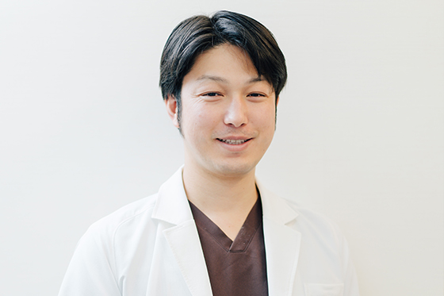
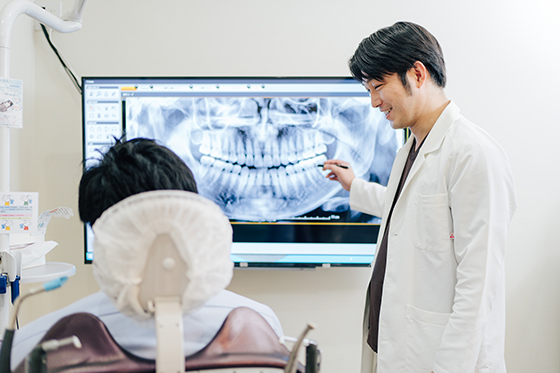
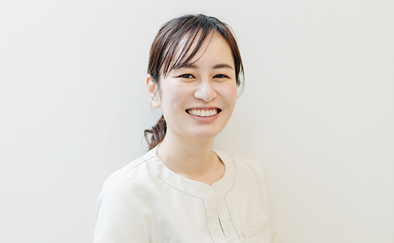
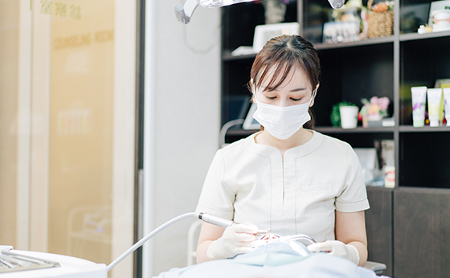
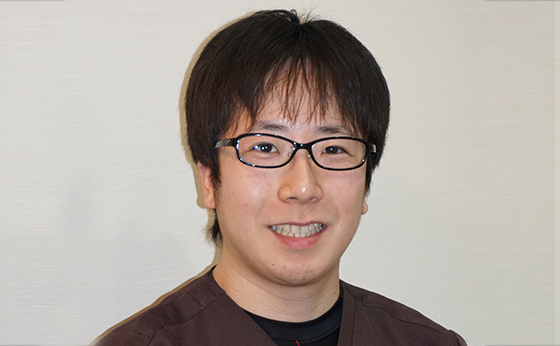
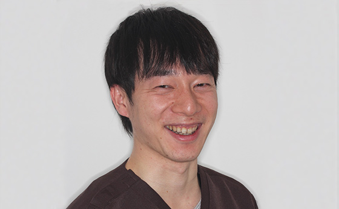

患者様に寄り添うスタッフをご紹介します
静岡県駿東郡長泉町の歯医者で、三島駅・下土狩駅に近い「MI総合歯科クリニック」の理事長・スタッフをご紹介します。経験や知識が豊富なスタッフが、みなさんの末長い健康のために日々診療にあたっております。お口まわりのお悩みは何でもお気軽にご相談ください。
理事長・スタッフ紹介
理事長
岩本 麻也（いわもと まや）
- 
- 
ごあいさつ
大切な歯をできるだけ残し、できるだけ削らず、できるだけ歯の神経を残し、さらにできるだけ抜歯を避ける質の高い歯科医療を通して、MI総合歯科クリニックが、私の地元の長泉町や三島市の患者様に愛され、安心して通っていただける歯医者となれるよう日々診療しています。
重度の歯周病を患っている方、虫歯にかかりやすい方も諦めずにご来院ください。診査診断、そして治療をご提供し、さらにはメインテナンスを通してお口の健康をサポートいたします。スタッフ一丸となって心を込めた診療をご提供できるように、若手の歯科医師や歯科衛生士の教育にも力を入れる歯科医院です。
私は日本口腔インプラント学会の専門医の認定を受けていて、主任歯科衛生士も日本口腔インプラント学会の専門歯科衛生士の資格を持っています。その環境をいかし、当院のすべての歯科衛生士が日本口腔インプラント学会の専門歯科衛生士の資格を取得できるように教育し、ひとりひとりの患者様にさらに質の高い治療をご提供したいと考えております。
長い目で見てお口全体の健康を考え、いつまでもご自身の歯でお過ごしいただけるようなお手伝いをいたしますので、お口まわりのお悩みは何でもお気軽にご相談ください。
略歴
2007年3月日本大学松戸歯学部卒業
2007年4月日本大学松戸歯科病院臨床研修
2008年4月都内一般歯科勤務
2008年4月日本大学松戸歯学部口腔機能学講座研究生
2009年4月水口インプラントセンター新宿初代医院長就任
2009年4月日本インプラント臨床研究会認定会員、渉外担当委員長就任
2009年日本口腔インプラント学会会員
2010年日本歯科放射線学会優良医取得
2013年歯科医師臨床研修医指導医取得
2013年日本アンチエイジング歯科学会会員
2014年ICOI 認定医（International Congress of Oral Implantologists）取得
2014年ISOI 認定医（International Society of Oral Implantology）取得
2015年7月MI総合歯科クリニック開院
2015年3月日本口腔インプラント学会専門医取得
2017年日本臨床歯周病学会会員
2018年5月医療法人社団翼会設立
2018年4月東北大学大学院歯学研究科口腔システム補綴学分野受講
主任歯科衛生士
岩本 那奈（いわもと なな）
- 
- 
略歴
日本口腔インプラント学会 2013.4インプラント専門歯科衛生士 取得
日本アンチエイジング歯科学会 認定歯科衛生士(5月より)
ホワイトニングコーディネーター
スマイルセラピスト
日本口腔インプラント学会会員
日本歯科審美学会会員
日本アンチエイジング歯科学会会員
日本臨床歯周病学会会員
矯正担当医
菊田 純（きくた じゅん）

略歴
2011年日本矯正歯科学会会員
2011年東京矯正歯科学会会員
2015年日本大学大学院博士課程修了
2016年日本矯正歯科学会認定医取得
2020年日本矯正歯科学会臨床指導医（旧専門医）取得
矯正担当医
疋田 拓史（ひきだ たくじ）

略歴
2012年日本矯正歯科学会会員
2012年東京矯正歯科学会会員
2016年日本大学大学院博士課程修了
2018年日本矯正歯科学会認定医取得